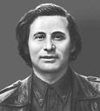
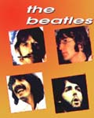
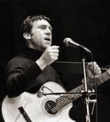

В нашем веке появились многие новые направления в музыке, корни которых, тем не менее, уходят в глубь истории.
Одним из самых значительных явлений стало появление четверки
В нашем веке появились многие новые направления в музыке, корни которых, тем не менее, уходят в глубь истории.
Одним из самых значительных явлений стало появление четверки  Классическая музыка XX век - время новаторства в классической музыке. Одним из известнейших композиторов был

В нашем веке появились многие новые направления в музыке, корни которых, тем не менее, уходят в глубь истории.
Одним из самых значительных явлений стало появление четверки
 В Советском Союзе в период «оттепели» возникло новое
направление в поэзии и музыке - авторская песня. Его создали люди разных профессий -
актеры, журналисты, физики, литераторы - которые сами писали стихи и музыку и сами исполняли свои песни.
Одним из самых любимых и известных авторов был актер